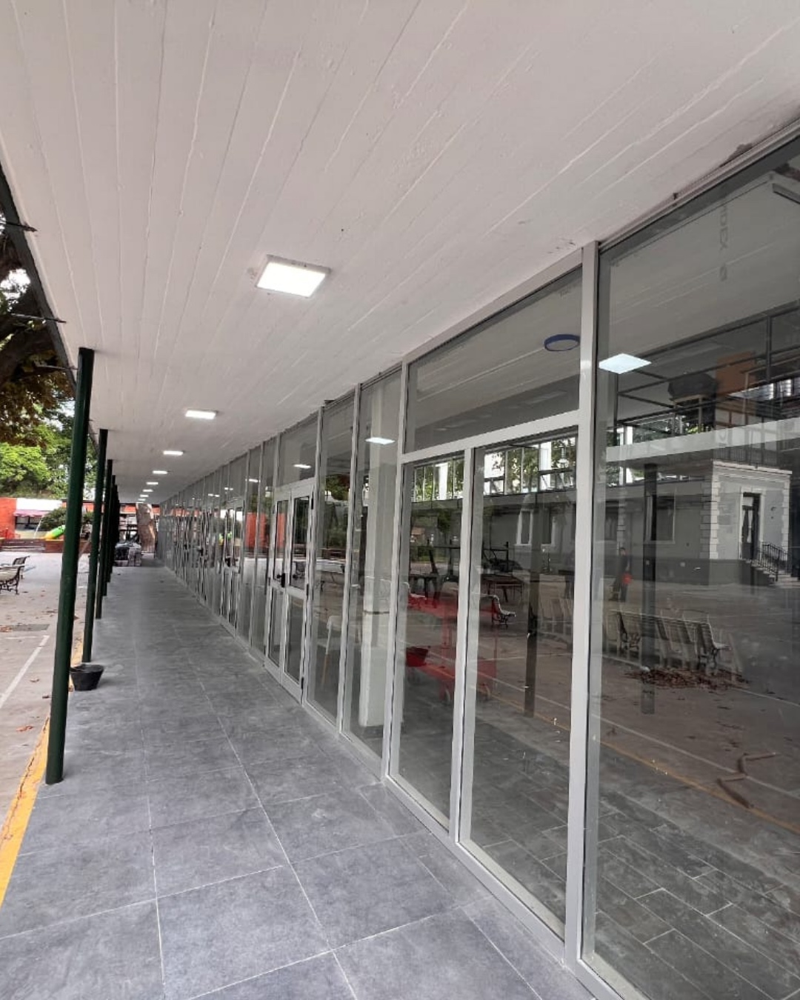

.png)
Para que la ventana grande del living deje entrar todo el sol de la tarde, pero no la corriente de aire ni el ruido de la calle.
Fabricamos en nuestra planta aberturas de aluminio a medida, con DVH armado por nosotros, y las colocamos con nuestro equipo en zona sur, Capital y zona norte. También hacemos aberturas de PVC.
Pensá en el último invierno: la estufa prendida todo el día y, aun así, frío cerca de la ventana. Cada temporada con las aberturas de siempre es plata que se escapa por una rendija que nadie ve. Y el calor del verano entra por el mismo lugar.
Te respondemos por WhatsApp y coordinamos la visita para medir tu obra.

Cuando una tienda de aberturas revende lo que fabrica otro, nadie responde de punta a punta: el que mide no fabrica, el que fabrica no coloca y, si algo falla, empieza el pasamanos.
Acá es al revés. Medimos tu obra, cortamos y armamos el aluminio en nuestra planta de Canning y colocamos con nuestro propio equipo. No tercerizamos lo que define la calidad de tu trabajo terminado, para que tengas una sola persona que da la cara antes, durante y después de la instalación.
De lejos, todas las ventanas de aluminio parecen iguales. La diferencia se nota a los seis meses: en el sellado que no falla, en la corrediza que sigue deslizando suave, en el silencio que se mantiene aunque pase un camión.
Marcos finos que dejan entrar más luz y un doble vidrio armado en nuestra planta que frena el frío y el ruido, para que no tengas que elegir entre una casa luminosa y una casa templada.
Cada abertura se adapta milimétricamente a tu obra, para que no termines forzando una medida estándar donde no entra bien.
Te acompañamos desde la primera medida hasta el detalle final, para que no tengas que adivinar qué línea de aluminio te conviene.
Colocación en obra con técnicos experimentados, para que el sellado quede como tiene que quedar la primera vez.
Trabajamos con marcas líderes y hacemos seguimiento después de la colocación, porque en la terminación está la diferencia entre algo que dura y algo que hay que volver a tocar en dos años.
Las aberturas que elegís hoy son las que vas a tener puestas durante las próximas décadas. La pregunta no es si invertir en calidad, sino con quién.
Cada obra pide algo distinto: más aislación, más luz, más diseño o las tres cosas juntas. Elegí por dónde empezar.
Marcos finos, terminaciones prolijas y la resistencia del aluminio, también en versión corrediza para ganar espacio.
Ver ventanas de aluminio →Dos líneas de aluminio para distintos proyectos y presupuestos. Te ayudamos a elegir con criterio, no a ciegas.
Conocer las líneas →La opción más aislante para el frío, el calor y el ruido. Una casa más silenciosa y más fácil de calefaccionar.
Ver aberturas de PVC →Dos vidrios con una cámara de aire en el medio. El frío y el ruido se quedan afuera desde el primer día.
Ver ventanas con DVH →Convertí el balcón, la galería o el patio en un ambiente que usás todo el año, sin perder ni un rayo de sol.
Ver cerramientos →Grandes paños que integran el interior con el jardín y llenan la casa de luz, sin corrientes de aire.
Ver puertas corredizas →Vidrios a medida para tu casa o tu obra, con el mismo cuidado que ponemos en cada abertura.
Ver vidriería →Cada foto es una obra real, con su producto y su localidad. Tocá la que se parezca a lo que buscás y consultanos por un trabajo igual para tu casa.
Tenemos 38 reseñas y 5.0 de puntuación en nuestro perfil de Google. No lo decimos nosotros: lo dicen los clientes que ya cambiaron sus aberturas con nosotros.
Sí. Coordinamos una visita para medir en el lugar y asesorarte sobre la línea y el material que le conviene a cada abertura. Así el presupuesto sale de medidas reales, no de un cálculo a ojo, y la abertura llega para entrar justa.
Sí. Fabricamos cada abertura en nuestra planta de Canning según las medidas de tu obra: ventanas de aluminio en líneas Modena y A30, cerramientos, puertas corredizas de vidrio, DVH y también aberturas de PVC. No adaptamos medidas estándar, para que no termines forzando una abertura donde no entra bien.
Nuestra fábrica está en Canning y en zona sur llegamos a Canning, Monte Grande, Ezeiza, Esteban Echeverría, San Vicente, Luis Guillón, Tristán Suárez y Carlos Spegazzini. También hacemos obras en Capital Federal y zona norte. Escribinos con tu localidad y coordinamos la visita.
Para la mayoría de las casas recomendamos aluminio con DVH: marcos más finos que dejan entrar más luz, paños grandes, mucha resistencia y una aislación que se siente desde el primer invierno. El PVC aísla más, por eso lo sugerimos en ambientes puntuales, como un dormitorio sobre una avenida. En la visita te recomendamos el material para cada ambiente.
Sí, con cita previa. Coordinamos el día y el horario por WhatsApp para que tu pedido esté listo cuando llegues y no tengas que esperar.
Ser una fábrica local no es un detalle. Significa que quien mide tu obra, quien fabrica tus aberturas y quien las coloca está en la zona, y que si algo necesita un ajuste, del otro lado hay un equipo que te conoce, no un depósito en otra provincia.
Nuestra base es zona sur: Canning, Monte Grande, Ezeiza, Esteban Echeverría, San Vicente, Luis Guillón, Tristán Suárez y Carlos Spegazzini. Y también llevamos nuestras aberturas a obras en Capital Federal y zona norte. Estés donde estés, vamos a medir en el lugar y te asesoramos ahí mismo.
El calor ya se siente, y el próximo invierno llega antes de lo que parece. Cada temporada con las aberturas de siempre se paga dos veces: en la factura y en el confort que no tenés.
¿Coordinamos la visita a tu obra esta semana o preferís la que viene?
Coordinar visita a obra →Tu casa templada y silenciosa empieza con una visita de medición.